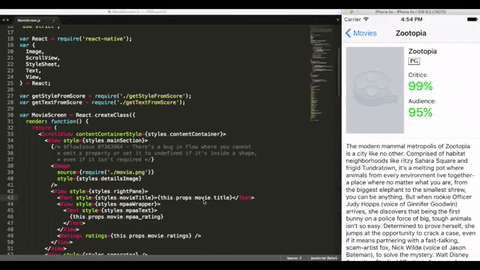

Full name: index.( Util.reverse works )
Writing ReactNative applications with Fable
Bringing together the F# and Native via JS ecosystem
 meets
meets
ABOUT
Speaker: Eugene Tolmachev
- Building software for over 20 years
- Author of several OSS projects, including fable-elmish and FsShelter
- A principal architect @ Prolucid
Prolucid
- provides expertise in custom software development for mission critical embedded, vision and cloud enabled applications.
- a sponsoring member of F# Foundation
- F#unctional Toronto meetup sponsor
- OSS sponsor of fable-elmish, FsStorm, FsShelter and many more
FABLE AT GLANCE
- Compiles F# source code to JavaScript
- Powered by the F# compiler and Babel
- Compatible with most of FSharp.Core and some .NET BCL
- Source maps for F# code debugging
- No runtime, framework agnostic (fable-core is just a library)
- Runs on Web, Node, Desktop (Electron) and Mobile (React Native, Fuse) apps
- Extensible through plugins
- Young but growing ecosystem (packages available in npm)
fable-core is just 20KB gzipped
FABLE COMPATIBILITY WITH F#
- Records, Unions and Tuples
- Structural Equality and Comparison
- Comprehensions (seq, array, list)
- Computation Expressions
- Pattern Matching and Active Patterns
- Object Expressions
- Units of Measure
- Type Providers (must be written for Fable)
Check the documentation for more info
HELLO WORLD!
1: 2: 3: 4: 5: 6: 7: 8: |
|
fableconfig.json
1: 2: 3: 4: 5: 6: 7: 8: 9: 10: 11: 12: 13: 14: 15: 16: 17: 18: 19: 20: 21: 22: |
|
TESTING
NUnit or Visual Studio tests can be compiled to JS too
1: 2: 3: 4: 5: 6: 7: 8: 9: |
|
Compile the tests using NUnit plugin and run them with Mocha
1: 2: 3: 4: 5: |
|
INTERACTING WITH JS
Fable takes advantage of JS ecosytem's full potential.
Because Functional Programming is fantastic
and JS ecosystem is...
HUGE
MADE WITH FABLE: IONIDE

F# Extension for VS Code and Atom

Fable itself has been developed with VS Code + Ionide!
FABLE IN NUMBERS
- Currently in beta: v0.6.x (soon v1.0.0)
- 6 months since release
- >800 unit tests
- >800 commits, >500 stars, 37 contributors
- 25 packages in npm: compiler, core lib, bindings, TypeScript parser
- 5000 downloads last month
REACT-NATIVE

With React Native, you don't build a “mobile web app”, an “HTML5 app”, or a “hybrid app”. You build a real mobile app that's indistinguishable from an app built using Objective-C or Java.
React Native uses the same fundamental UI building blocks as regular iOS and Android apps.
REACT-NATIVE DEMO
See effect of your code changes right away!

ELM(ISH)
A library for writing F# applications following "model-view-update" pattern, as made famous by Elm.

This pattern provides a way of creating self contained components that can be reused, combined, and composed in endless variety.
Let's start coding!
Don't forget to star the projects on GitHub:
and join the F# Software Foundation!